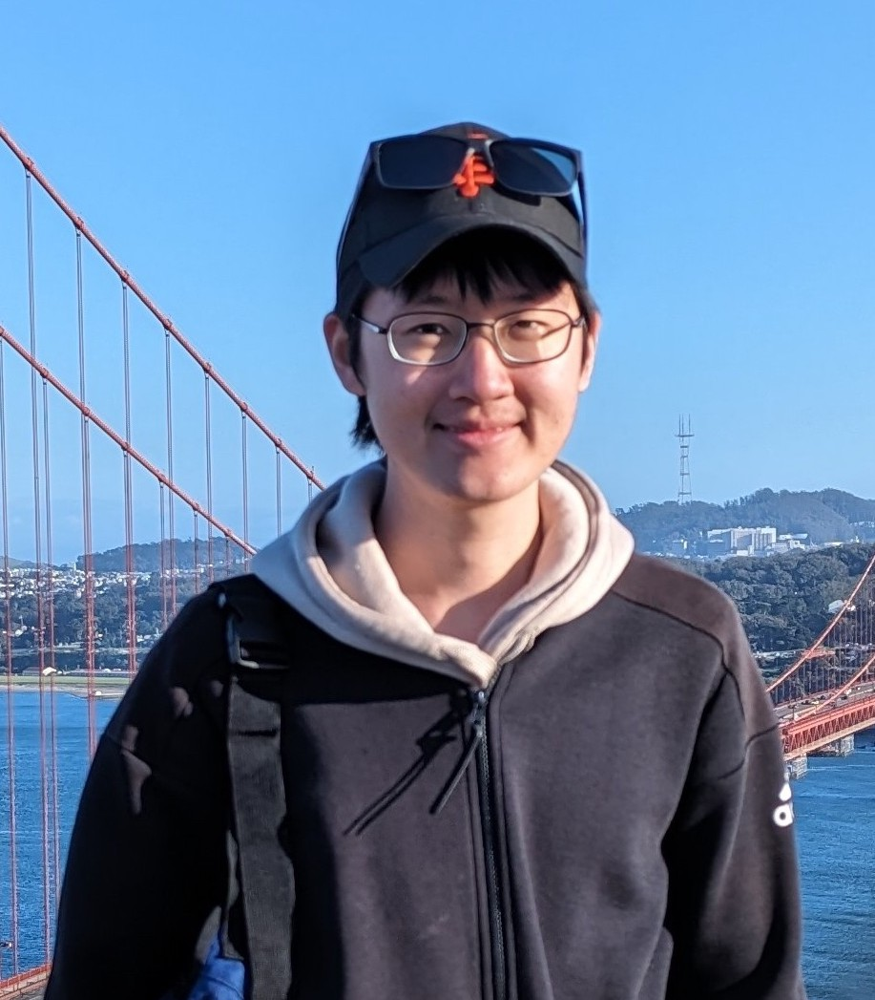

Email: kaichunchang@berkeley.edu
I am a first-year PhD student in EECS at University of California, Berkeley, advised by Prof. Sanjit A. Seshia and Prof. Alberto L. Sangiovanni-Vincentelli.
Before coming to Berkley, I received my B.S. in Electrical Engineering at National Taiwan University (NTU), where I was fortunate to work with Prof. Iris Hui-Ru Jiang, Prof. Chung-Wei Lin, Prof. Qi Zhu, and Prof. Chao Huang.
My main research interest lies in the design, modeling, and verification of cyber-physical systems (CPS), especially for (but not limited to) the application to autonomous vehicles. I am also interested in electronic design automation (EDA), with a focus on timing analysis and optimization, physical design optimization, and machine learning for EDA.